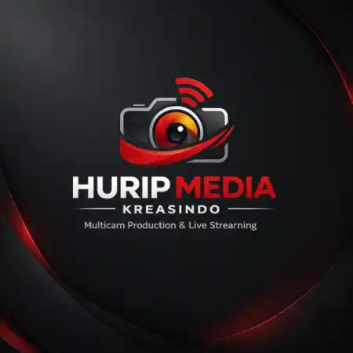

Brand Stories
Hurip Media Kreasindo, Multicam Production & Live Streaming Bandung

Produksi Multimedia untuk Era Digital Event
Hurip Media Kreasindo adalah perusahaan produksi multimedia berbasis di Bandung yang fokus pada layanan Multicam Production dan Live Streaming Professional untuk berbagai kebutuhan event, brand, komunitas, perusahaan, hingga instansi.
Dalam era digital dan hybrid event saat ini, kebutuhan akan tayangan visual yang profesional, stabil, dan interaktif menjadi semakin penting untuk membantu menyampaikan pengalaman acara kepada audiens secara lebih luas.
Multicam Production untuk Tampilan yang Dinamis
Hurip Media Kreasindo menghadirkan sistem produksi multicam untuk menciptakan tampilan visual yang lebih dinamis, profesional, dan engaging.
Sistem multi-kamera memungkinkan setiap momen penting dalam acara dapat ditangkap dari berbagai sudut secara lebih sinematik dan nyaman dinikmati audiens.
Layanan ini cocok untuk:
- Seminar & Webinar
- Konser & Music Performance
- Gathering & Community Event
- Wisuda
- Podcast & Talkshow
- Event Hybrid
Live Streaming Professional
Selain produksi multicam, Hurip Media Kreasindo juga menyediakan layanan live streaming professional untuk berbagai platform digital.
Tayangan dapat disiarkan secara langsung melalui:
- YouTube
- Instagram Live
- Facebook Live
- Zoom Meeting
- Website Custom Streaming
Didukung Technical Production Support
Untuk memastikan kualitas produksi tetap optimal, setiap proses didukung oleh technical production support dengan workflow yang terstruktur dan sistem produksi modern.
- Video Switching
- Audio Management
- Streaming Control
- Monitoring System
- Operator Profesional
Mengapa Memilih Hurip Media Kreasindo?
Tim Berpengalaman
Berpengalaman menangani event online, offline, maupun hybrid dengan workflow produksi yang terstruktur.
Kualitas Broadcast Profesional
Menghasilkan visual yang tajam, audio yang jelas, dan tayangan yang nyaman dinikmati audiens.
Fleksibel untuk Berbagai Skala Event
Siap melayani kebutuhan produksi skala kecil, menengah, hingga event besar.
Teknologi Stabil & Modern
Menggunakan perangkat dan sistem produksi terkini untuk memastikan siaran berjalan optimal dan minim kendala teknis.
Filosofi Kerja
Bagi Hurip Media Kreasindo, produksi multimedia bukan sekadar menayangkan sebuah acara.
Setiap event memiliki momen, pesan, dan pengalaman yang berharga. Karena itu, setiap detail produksi perlu disampaikan secara profesional agar pengalaman tersebut tetap terasa baik secara langsung maupun digital.
Hurip Media Kreasindo hadir untuk membantu memastikan setiap tayangan dapat tersampaikan dengan kualitas visual dan audio yang maksimal kepada audiens.
Baca juga: